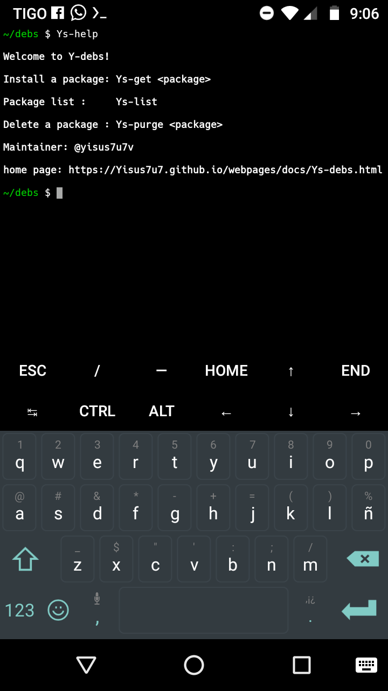
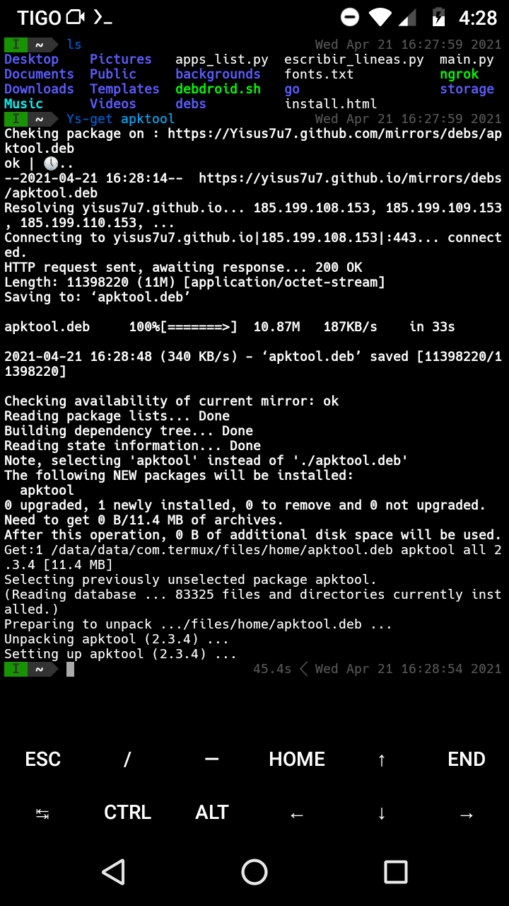
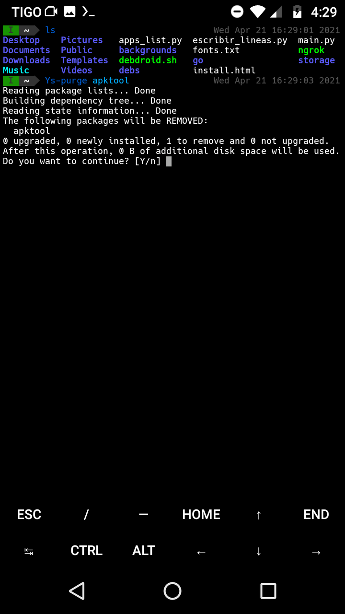

Que es Ys-debs? | Ys-debs es un simple gestor de paquetes para termux, casi todos los paquetes que contiene son para termux x11, pero tambien hay paquetes de terminal como apktool
puede instalar paquetes con Ys-get, ejemplo: Ys-get apktool
Y tambien puede desinstalar paquetes
Para ver la lista de paquetes disponible simplemente ejecute | Ys-list
----------------
pkg update && pkg upgrade
pkg install wget
wget -L https://Yisus7u7.github.io/mirrors/debs/ys-debs.deb
pkg install ./ys-debs.deb----------------
Disfruta!
paquetes populares : rapidpayload, candy-icons, oreo-blue-cursors-theme
Se aceptan solicitudes de paquetes? | si
dependiendo su peso, tipo y función del paquete, los paquetes que son atendidos con pioridad son : temas de iconos, cursores, gtk, fuentes y cualquier otro relacionado con x11 , tambien fuentes (ttf)